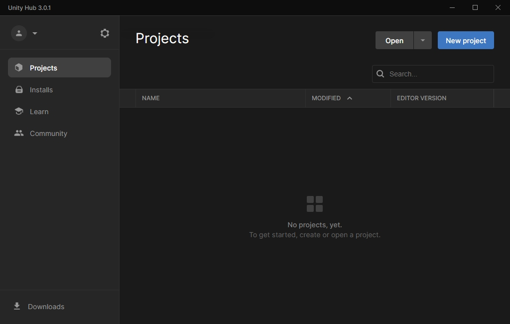
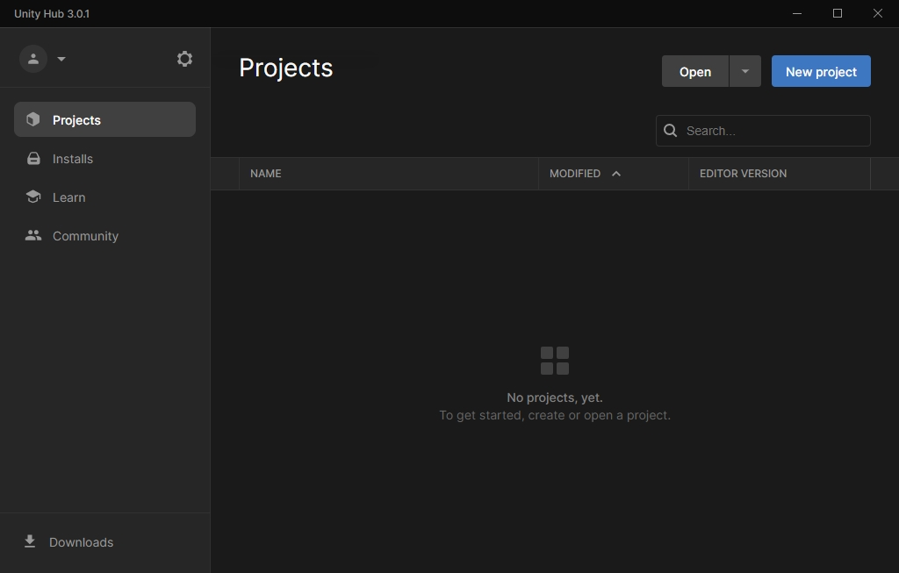
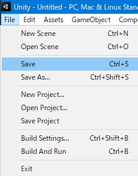

https://github.com/ds5678/ModComponent_TemplateProject
「Code」ボタンをクリックし、Download ZIPをクリックします。

（実は、ほとんどの必要な情報は既に https://github.com/ds5678/ModComponent/tree/master/docs/
にあります。
チュートリアルも https://github.com/ds5678/ModComponent/blob/master/docs/Item-Mod-Tutorial.md
にあります。
しかしそれを読んだだけではまだ理解できない人のために、ここではもっとUnityビギナー向けの詳しい手順を書きます。）
アイテムMODを作るのに必要なのは、素材となる3Dモデルや2D画像を用意してから、Unityで少し作業をするだけです。
しかし素材を作ることができる人であっても、今までUnityを使った事がなければ、凄く複雑で難しそうだと思って諦めてしまうかもしれません。
実際には、ModComponentを使えばUnityで行う操作はいつも同じ単純な手順なので、このガイドと同じように操作するだけで短時間で簡単にできま
す。
このチュートリアルは、3Dソフトウェア(Blender)とUnityのインストールをして、実際にモデルを作成してからゲームに導入するまでです。
Blenderの操作は詳しく説明するときりがないので、今回のチュートリアルでは簡単なモデルしか作りません。
また、衣類機能や、音源機能は省略します。
アイテムにはゲームで通常表示される名前とは別に、Unityで利用する為のプレハブ名が必要です。
これは「GEAR_」から始まる必要があるので、今回は「GEAR_ToiletPaperA」とい うプレハブ名にします。
この「ToiletPaperA」という名前は重要なので忘れないでください。
Modアイテムは、3Dモデル、2Dアイコン、翻訳テキストなどのファイルをそれぞれ用意して、
それからUnityを用いてそれらを1つにまとめたアセットバンドルにします。
（複数のアイテムを作った場合でも１つのアセットバンドルになります。）
そのアセットバンドルのファイル名は重要ではありませんが、今回は「toiletpapermod」に します。
今回は作業用フォルダとして「D:\Mod_TP」フォルダを使うと仮定して説明します。
実際には作業用のフォルダをあなたの好きな場所に任意の名前で作ることができます。
次に、そのサブフォルダに、各種作業用のフォルダを下記のように作成して下さい。
これらのフォルダ名は重要ではありません。実際には任意の名前に変更できます。
さらに、「Items_TP」のサブフォルダとして「auto-mapped」「blueprints」 「gear-spawns」
を作成して下さい。
これらの3つのフォルダ名は重要なので変更できません。
7-1から7-8までの手順はBlenderの解説なので、読む必要はありません。
普通にBlenderで作るだけですが、最初は単純なモデルでテストします。
UVとマテリアルとテクスチャも、簡単に済ませます。カメラやライトは必須ではありません。
BlenderファイルのままでもUnityに使用できますが、今回は必要なオブジェクトだけをFBXにエクスポートしま
す。
今回の作成したモデルは下記の通りです。

以下のページに行きます。
https://www.blender.org/download/lts/2-93/
通常はページ上部のボタンを使ってWindowsストアかSteamから入手します。
それらを使いたくない場合はその下部にある2.93.7のリンクを使用してダウンロードします。
インストールして次のステップに進みます。
起動したら、中央にスプラッシュスクリーンというものが表示されていますが無視します。
周囲のなにもない領域をクリックして、スプラッシュスクリーンを閉じます。
初期設定を
【【【【編集中】】】】
【【【【編集中】】】】
【【【【編集中】】】】
UVを編集したらUVレイアウトをPNG画像ファイルとしてエクスポートします。
テクスチャは他のアイテムにあわせて1024x1024程度にします。
マテリアルの設定はUnityで行うので細かい設定は必要ありません。
【【【【編集中】】】】
UVレイアウトを保存してから、ペイントソフトを使ってテクスチャのPNGを直接描くこともできます。
しかし、今回の例ではBlenderで簡単なペイントをします。
【【【【編集中】】】】
アイテムの外見がもっと良くなるように編集しましょう。
【【【【編集中】】】】
実はBlenderとUnityではXYZの軸の方向が異なるので、オブジェクトをZ軸で90度回転する事をおすすめします。
最後に、オブジェクトの原点やサイズを適用します。
BlenderファイルのままでもUnityで使用できますが、今回はFBXにエクスポートします。
ファイルメニュー＞エクスポート＞FBXを選択します。
下記のスクリーンショットのように設定します。
JSONファイルはModアイテムがどのように動作するかの詳細を書くためのファ イルです。
アイテム1つにつき1つのアイテムJSONファイルが必要です。
アイテムのJSONは「auto-mapped」フォルダに保存します。
作成するModアイテムの名前に合わせ、テキストエディタでファイルを作成します。
拡張子は .txt ではなく .json
に変更します。
例えば、アイテムの名前が「GEAR_ToiletPaperA」の場合、JSONファイルの名前は「GEAR_」を取り去って 「toiletpapera.json」
にしなければいけません。
ファイル名は全て小文字にする必要があります。
実際に Mod_TP\Items_TP\auto-mapped\toiletpapera.json を作成して下
さい。
それぞれのJSONの説明は下記のページにあります。
下記のページから必要なテンプレートを探して、自分のJSONファイル（toiletpapera.json）にコピーして使います。
今回は ModGenericComponent と ModTinderBehaviour を
使います。
必要な部分をコピーしてから、次の項目を変更する必要があります。
toiletpapera.jsonファイルの内容を編集してください。
オブジェクトを追加したり削除したりする時は、カンマの位置に注意して下さい。
JSON内にはコメントが書けないので、もしテンプレートにコメント部分があったら削除して下さい。
コード
{
"ModGenericComponent": {
"DisplayNameLocalizationId" : "GAMEPLAY_ToiletPaperA",
"DescriptionLocalizatonId" : "GAMEPLAY_ToiletPaperADescription",
"InventoryActionLocalizationId" : "",
"WeightKG": 0.1,
"DaysToDecay" : 0,
"MaxHP" : 100,
"InitialCondition" : "Perfect",
"InventoryCategory" : "Auto",
"PickUpAudio" : "",
"PutBackAudio" : "",
"StowAudio" : "Play_InventoryStow",
"WornOutAudio" : "",
"InspectOnPickup" : true,
"InspectDistance" : 0.4,
"InspectAngles" : [0, 0, 0],
"InspectOffset" : [0, 0, 0],
"InspectScale" : [1, 1, 1],
"NormalModel" : "",
"InspectModel" : ""
},
"ModTinderBehaviour": {
"SuccessModifier" : 35,
"DurationOffset" : 0
},
"ModHarvestableBehaviour": {
"Audio" : "",
"Minutes" : 5,
"YieldCounts" : [2],
"YieldNames" : ["GEAR_Tinder"],
"RequiredToolNames" : []
}
手順(6-2)でUnityテンプレートから作業用フォルダにコピーした「Mod_TP\Unity\Assets\Localization.json」
を編集 します。
JSONエディタか、単なるテキストエディタで編集できます。
ローカライズJSONの説明は下記にあります。
https://github.com/ds5678/ModComponent/blob/master/docs/Basic-Item-Configuration.md
作成するModアイテムの名前に合わせてJSONの内容を編集します。
「GAMEPLAY_SampleItem」と「GAMEPLAY_SampleItemDescription」
の名前を変更しなければいけません。
アイテムの名前が「GEAR_ToiletPaperA」の場合、「GAMEPLAY_ToiletPaperA」と 「GAMEPLAY_ToiletPaperADescription」
に変更します。
コード
{
"GAMEPLAY_ToiletPaperA" : {
"English" : "Toilet Paper Roll",
"Japanese" : "トイレットペーパーのロール"
},
"GAMEPLAY_ToiletPaperADescription" : {
"English" : "For now, you can just burn it for a short time.",
"Japanese" : "今の所、ただ短時間燃やせるだけです。"
}
}
下記のリンクから、まずUnity Hubをダウンロード、インストールします。
https://unity.com/download
次に、Unityは最新版ではなくUnity 2019.4.19をインストールします。
インストールの時にLanguage pack（言語パック）を選択できます。

Unityのインストールが完了したら、Unity Hubを開きます。
ProjectのOpen(開く)をクリックします。
 

前もってUnityテンプレートをコピーしておいた自分のUnityフォルダを開きます。


Unity Hubに新しいプロジェクトができたので、それをクリックして開きます。
Unityエディタの新しいバージョンを確認するダイアログボックスが表示されるので、「Skip new
version」ボタンを押してダウンロードをキャンセルします。
Unityエディターのウィンドウが開きます。ウインドウ内はいくつかのビューに区切られています。
左上にHierarchy（ヒエラルキー）、中央上にScene（シーン）、左下にProject（プロジェクト）、右にInspector（インスペク
ター）があります。

言語パックをインストールしてあれば、Editメニュー＞Preference＞Languagesを開き、言語を選択できます。

BlenderからエクスポートしたFBXファイルを、Unityにインポートします。
プロジェクトビューの「Models」フォルダへ、WindowsファイルエクスプローラーからTP01.fbxファ
イルをドラッグします。

または、プロジェクトビューのModelsフォルダを選び、Assetメニューか右クリックか ら、「新しいアセットをインポート」して、TP01.fbxを選びます。

Modelsフォルダの中にTP01がインポートされてアイコンが表示されます。

Blenderで使ったテクスチャー用のPNGファイルをUnityにインポートします。
プロジェクトビューの「Textures」フォルダへ、WindowsファイルエクスプローラーからTP1_Texture.pngファ
イルをドラッグします。
または、プロジェクトビューのModelsフォルダを選び、Assetメニューか右クリックから、「新しいアセットをインポート」します。
インポートされたモデル「TP01」には、マテリアルが埋め込まれています。それを抽出します。
プロジェクトビューのModelsフォルダを選ぶと、その右側にフォルダの中身が表示されます。
そこからTP01を選択してから、インスペクタビューの「Extract Materials」（マテリアルを抽出）ボタンをクリックします。

抽出先フォルダを選択するウィンドウが表示されたら「Materials」フォルダを選びます。
プロジェクトビューのMaterialsフォルダに抽出された「TP_Material」を選びます。
インスペクタビューで下記のように設定して下さい。

Albedo（アルベド）にはテクスチャにTP1_Textureが設定されているは
ずです。
アルベドのカラーは白、MetallicとSmoothnessの値は0です。
ここで一度、保存しておきましょう。
File＞Save で、 全てを保存します。

Asset/ModelsにインポートされたファイルTP01をHierarchyビューにドラッグします。
HierarchyにゲームオブジェクトTP01のアイコンが表示され、Sceneにモデルが表示されます。

HierarchyのTP01アイコンをAsset/Prefabsにドラッグします。
「Original Prefab」（原型プレハブ）か「Prefab
Variant」（プレハブバリアント）かを選ぶ質問が表示されるので、「プレハブバリアント」ボタンを選択します。

HierarchyのTP01の名前が青い文字になります。そして、Prefabsフォルダの中にTP01が表示されます。
それから、Prefabsの中のTP01の名前を事前に決めていた通りに「GEAR_ToiletPaperA」に変更します。
このプレハブ名はModComponentにとって重要です。

Prefabsの中のGEAR_ToiletPaperAを選択してからInspectorの「Open Prefab」
ボタンをクリックします。
または、GEAR_ToiletPaperAをダブルクリックします。
または、HierarchyのTP01の名前の右にある「＞」ボタンをクリックします。
するとプレハブが開かれてInspectorで編集できるようになります。

GEAR_ToiletPaperAのInspectorの「Add Component」（コンポーネントの追加）ボタンをクリックします。
Physics＞Box Collider（物理＞ボックスコライダー）を選びます。
シーンの中にあるオブジェクトが箱型の緑色の線で包まれます。
コライダーは通常はぴったりのサイズのはずですが、もし大きさを編集したいなら「Edit
Collider」ボタンをオンにしてから、箱の面に表示された緑色の点をドラッグします。

HierarchyのGEAR_ToiletPaperAの名前の左側にある「＜」ボタンをクリックします。

ProjectビューのAssets/InventoryGridIconsフォルダを選択します。
フォルダの中にはテンプレートとして「ico_GearItem__SampleItem.png」という画像ファイルが入っています。（GearItemに
続く文字は2個のアンダースコアです）
このファイル名は重要です。
自分のModアイテムのプレハブ名に基づいた名前に変更する必要があります。
今回の例では、プレハブ名が「GEAR_ToiletPaperA」なので、アイコン名を「ico_GearItem__ToiletPaperA.png」
に変更します。
GearItemの次の文字はアンダースコアが2つ連続している必要があります。
インベントリアイコンについてのもっと詳しい説明は以下のページにあります。
https://github.com/ds5678/ModComponent/blob/master/docs/Basic-Item-Configuration.md
この画像は512*512ピクセルのサイズでなければなりません。
テンプレートのアイコン画像には何も描かれていませんので、自分自身で編集してください。
画像ファイルをWindowsファイルエクスプローラーで表示したいなら、Projectビューの
ico_GearItem__ToiletPaperA.pngを右クリックしてか ら「Show
in Explorer」（エクスプローラーで表示）を選んでください。

最も簡単な方法は、BlenderやUnityのスクリーンショットをとって、2D画像編集ソフトでアイテムの画像をトリミングする事でしょう。
Unityでスクリーンショットを撮影する手順のヒントは下記の通りです。

画像が正しく保存されれば、InventoryGridIconsフォルダの中の「ico_GearItem__ToiletPaperA.png」 が更新されます。

今回の例では、アセットバンドルの名前は「toiletpapermod」にするつもりです。
Projectビューで「Assets」フォルダを選択してから、その中にある「Localization」ファイルアイコンをクリックします。
InterloperのAssetBundleのドロップダウンリストボックスで「New」を選びます。
新しい名前として「toiletpapermod」と入力します。
同じようにして、「InventoryGridIcons」フォルダと「Prefabs」フォルダのアイコンの２つを選んで、そららの
AssetBundleの名前も「toiletpapermod」 にします。
注意：それらのフォルダに入っているファイルのAssetBundleの名前を変更する必要はありません。
これがUnityでの最後の作業です。
Assets（アセット）メニューの「Build AssetBundles」コマンドを選びます。

これによって「Mod_TP\Unity\AssetBundles」フォルダが作成されて、アセットバンドルファイル
がその中にエクスポートされます。
AssetBundlesフォルダの中には複数のファイルが保存されますが、「toiletpapermod.unity3d」という名前
の１つのファイルだけが ModComponentに必要です。
ModComponentファイルはZIPファイルをリネームして拡張子を「.modcomponent」に変更しただけのファイルです。
必要なファイルを「Items_TP」フォルダに集めて、最初にZIPを作る必要があります。
Mod_TP\Unity\AssetBundlesフォルダにエクスポートされたtoiletpapermod.unity3dを、
Mod_TP \Items_TP\auto-mappedフォルダにコピーします。
この時、auto-mappedフォルダには（手順8.1）によって既にtoiletpapera.jsonが保存されて
いるはずです。
今回の例では、ModComponentファイルを簡単に作成するツール「ModComponent Extractor」を使います。
次のステップ(10.3)に進んで下さい。
しかし、もし自分でZIPファイルを作成したければ、以下の手順に従って下さい。
「Items_TP」フォルダの中の3つのフォルダを、「Items_TP.zip」という名前で圧縮します。

注意点として、Items_TP.zipの中にはItems_TPフォルダは入れてはいけません。「auto-mapped」「blueprints」 「gear-spawns」の3つのフォルダが直接ZIPの中に置かれていなければいけません。
ZIPファイルが作られたら、その拡張子を.zipから.modcomponentに 変更します。
ModComponentExtractor is an application for making and extracting
'.modcomponent' files used by ModComponent.
（ModComponentExtractorは、ModComponentが使用する「.modcomponent」ファイルを作成および抽
出するためのア プリケーションです。）
下記のリンクを開き、最新のリリースをダウンロードします。（WindowsユーザーはModComponentExtractor_Win64.zipが
必要）
https://github.com/ds5678/ModComponentExtractor
ダウンロードされたzipファイルの中からModComponentExtractor.exeをMod_TPフォ
ルダに抽出してください。
Windowsファイルエクスプローラーで、Mod_TPフォルダ内のItems_TPアイコンをModComponentExtractor.exeに ド ラッグしてください。
ModComponentExtractorの黒いウインドウに白い文字で「Succeeded」と表示されていれば成功です。
黒いウインドウを閉じて下さい。
Mod_TPフォルダの中に、Items_TP.modcomponentという名前のファイルがあるはずです。
それが完成されたアイテムMODです。
自分でアイテムModを作りたいと考えているあなたは、既に他のTLDのModを使用しているはずです。
だからここでは基本的なModのインストールについて詳しくは説明しません。
基本的なModのインストールの説明は、https://xpazeman.com/tld-mod-list/
にあります。
以下のMODを全てインストールして、エラーなしで動作するようにしてください。
-ModComponentと、それの依存関係
（ModSettings,GearSpawner,LocalizationUtilities,CraftingRevisions)
-DeveloperConsole
-Coordinates Grabber
-Placing Anywhere（アイテムを配置するため）
-PlaceFromInventory（アイテムの配置を簡単にするため）
-SaveAnywhere（いつでもセーブとロードをできるように）
-他のModderのアイテムMod（それらとスポーン位置を重複させたくない場合）
The Long Darkのゲームプログラムが終了している事を確認します。
他のModと同じように、自分のMod(Items_TP.modcomponent)をTheLongDark\Modsフォルダにコピーします。
The Long Darkを起動します。
MelonLoaderのウィンドウで、エラーが無いかどうかを見て下さい。
ゲームのウィンドウでMelonLoaderが隠れた時は、Alt+Tabキーなどを使ってウィンドウを最前面にしてくだ
さい。
もしエラーがあれば、JSONやUnityでの作業に間違いがあります。
フォルダやファイルの名前やそれらの階層構造、プレハブなどの名前の間違いやアルファベットの大文字小文字やミスタイプに注意して下さい。
間違いを見つけてからアセットバンドルとModComponentを作り直し、修正されたMODを再インストールしてください。

エラーがなければ、ゲームを起動してからデベロッパーコンソールを開きます。（F1 キー）
「add toil」のように名前を途中まで入力したら、Tabキーでアイテム名の残りの文字が「オートコンプリート」されます。
それからEnterキーでコマンドを実行します。インベントリにアイテムが追加されていれば成功です。
もしアイテム名をオートコンプリートできない場合、Modに何かのエラーがあります。
アイテムを正常に操作できるかと保存できるかどうかをチェックします。
JSON（toiletpapera.json）で設定されたアイテムの機能が正常に働くかチェックします。
MODのテストが全て終わったら、ゲームプレイ中にプレイヤーがアイテムを入手できるようにする設定をします。
次の2種類があります。
下記のページに詳しい情報があります。
https://github.com/ds5678/ModComponent/blob/master/docs/Gear-Spawns.md
必須MODのCoordinates Grabberを使うので、その使用方法をMODの配布ページで確認してください。
https://github.com/ds5678/Coordinates-Grabber
Mod_TP\Items_TP\gear-spawnsフォルダの中にテキストファイルを作る必要があります。
ファイルの個数やファイル名は重要ではありません。
今回の例では、以下の2つのファイルを作成します。
内容は空のままでかまいませんので、これらの2つのファイルを実際にそこに保存して下さい。
TP-LootTables.txtをテキストエディタで編集して下さい。
下記URLに必要な情報があります。
https://github.com/ds5678/ModComponent/blob/master/docs/Loot-Tables.md
下記はTP-LootTables.txtのサンプルです。
これは浴室のキャビネットと釣り小屋の引き出しからトイレットペーパーが発見される確
率を設定します。
手順13.0の説明に従って「GEAR_ToiletPaperA」の名前を省略可能なので「ToiletPaperA」と記述しています。
コード
loottable=BathroomCabinet item=ToiletPaperA w=10 loottable=FishingDrawer item=ToiletPaperA w=3
オプションとして：下記のURLにテンプレートがあります。
全ての行をコピーして自分のTXTファイルに貼り付けて使えます。
https://github.com/stmSantana/ModComponentDocs/blob/main/Samples/template-LootTables.txt
ほとんどの容器の名前は<LootTableName>を見れば理解できるはずです。
しかしCargoから始まる名前はわかりにくいかもしれません。それらはTimberwolf Mountainに散在している大きな箱です。
ゲーム中にCoordinates Grabberをloot
tableモードで使用すれば、マウスカーソルの下にある容器の<LootTableName>を調べられます。
TP-Scenes.txtをテキストエディタで編集して下さい。
下記URLに必要な情報があります。
https://github.com/ds5678/ModComponent/blob/master/docs/Scenes.md
下記はTP-Scenes.txtのサンプルです。
これはキャンプオフィスにトイレットペーパーがスポーンする確率を設定します。（ファイルキャビネットの上に2箇所。確率
は50%と100%。）
コード
scene=CampOffice item=GEAR_ToiletPaperA p=4.6833,1.8265,-3.3410 r=0.0000,119.9167,0.0000 c=50 item=GEAR_ToiletPaperA p=4.6700,1.8265,-3.1150 r=0.0000,55.7875,0.0000 c=100
オプションとして：下記のURLにテンプレートがあります。
全ての行をコピーして自分のTXTファイルに貼り付けて使えます。
https://github.com/stmSantana/ModComponentDocs/blob/main/Samples/template-Scenes.txt
ほとんどの主要な「シーン」の名前はコメント行の<SceneName>と付属説明を見れば理解できるはずです。
例えば沿岸ハイウェイの屋外のシーン名は「CoastalRegion」です。
グレイマザーの家の屋内のシーン名は「GreyMothersHouseA」です。
しかし一般的な洞窟やキャビンのA、B、Cのような違いは、名前を見てもわからないでしょう。
Coordinates Grabberでそれを調べる必要があります。
ゲーム中に自分のMODのアイテム（ToiletPaperA）をスポーンさせたい場所に、それを配置して下さい。
Coordinates
GrabberをSceneモードで使用すれば、マウスカーソルの下にあるアイテムの<SceneName>を調べられます。
次に、Sceneモード中に［右 Ctrl］キーを押せば、マウスカーソルの下にあるアイテムの完全なアイテムスポーン定
義がクリップボードにコピーされます。それをテキストエディタでTP- Scenes.txtの正しいScene位置に「貼
り付け」して下さい。
2つのテキストファイルを保存したら、もう一度ModComponentを作ります。（手順10.3.2.）を参照。
それから、再び完成したMODを、もう一度インストールします。（手順11.）を参照。
それから、もう一度MODのテストをします。（手順12.）を参照。
新規のゲームを開始します。ミステリーレイクのキャンプ・オフィスに行きます。
（手順13.3で、そこにスポーンを設定しました）
エラーが発生しないで、キャンプ・オフィスのファイルキャビネットの上にトイレットペーパーが1つ以上スポーンしていれば成功です。
おめでとう！これでアイテムMODが完成しました。
完成した「Items_TP.modcomponent」を公開できます。
別の新しいアイテム（半分使用されていて細くなったトイレットペーパーロール）として「ToiletPaperB」という新しいオブジェクトを
Blenderで作って、自分のMODに追加してみてください。
この場合、１つのアセットバンドルファイルに2つのプレハブが入ることになります。
アイテムJSONのtoiletpaperb.jsonを新たに作る必要があります。
翻訳JSONであるLocalization.jsonのファイルは1つだけのままです。その中に2つ目のアイテムの設定を追加します。
gear-spawnsのテキストファイルの数は増やしても大丈夫ですが、今回の例では既存のファイルに何行か追加するだけにします。
(終わり)